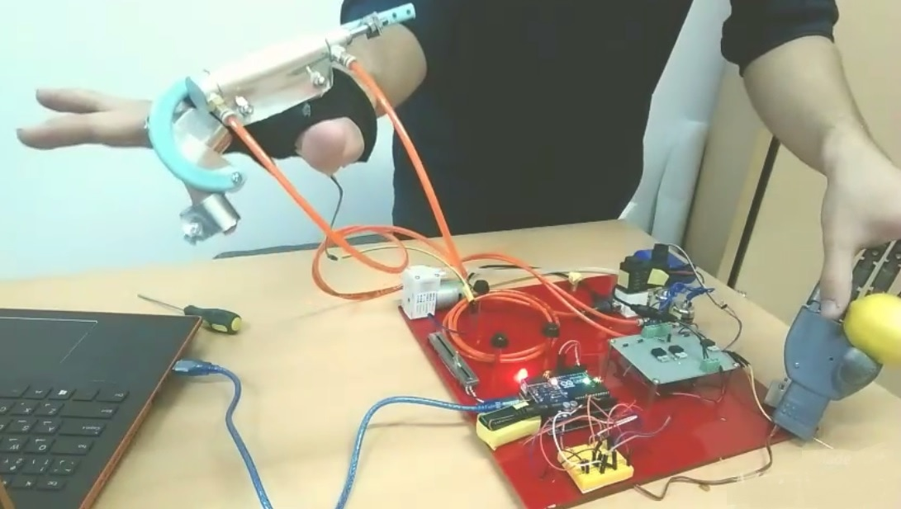
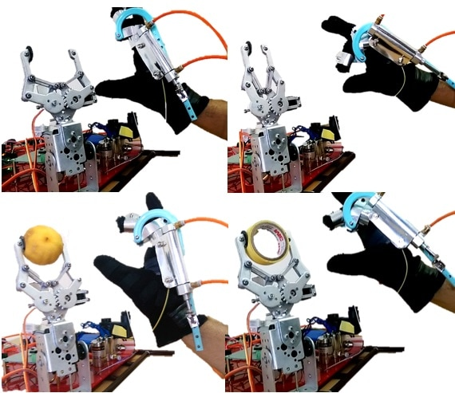
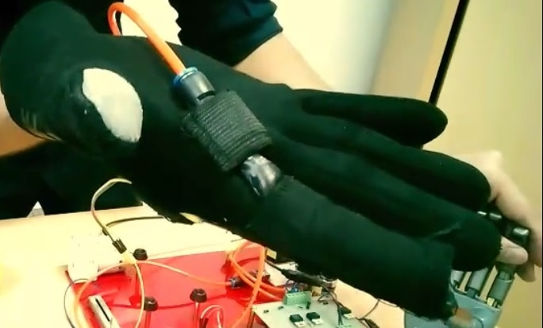
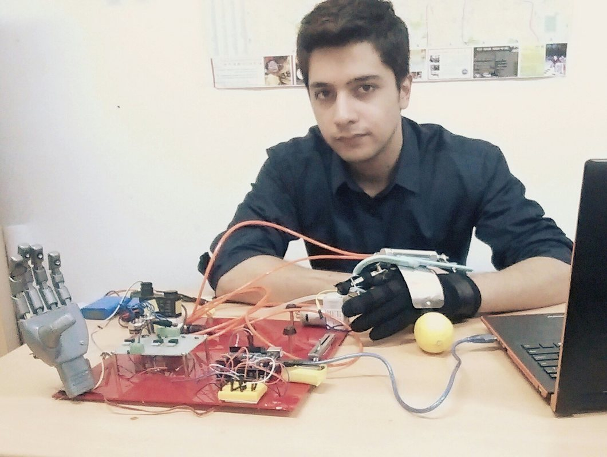

03 / ACADEMIC PROJECT
Haptic Feedback
Glove.
A portable, low-cost glove concept that uses direct-control pneumatics to provide both force and tactile feedback.

THE IDEA
Add touch to
the interaction.
Haptic interfaces add a physical dimension to interaction with virtual or remote objects. In this undergraduate project, I developed a glove concept that combines force and tactile feedback using a direct-control pneumatic approach.
The project explores a portable, low-cost way to make manipulation more intuitive, with potential applications in robotic teleoperation and rehabilitation devices.
FEEDBACK APPROACH
Two forms of
physical feedback.
- Force feedback
The glove incorporates a pneumatic mechanism for applying force feedback to the hand.
- Tactile feedback
A separate glove-mounted arrangement explores the sensation of contact.
- Object interaction
The project photographs show the glove alongside a robotic gripper in several object-handling configurations.

The prototype
HARDWARE & DEMONSTRATION


Potential applications
The original project proposes uses in teleoperation robotics and medical rehabilitation devices. These are application possibilities, rather than claims of clinical evaluation or deployment.
The core exploration is how wearable pneumatic hardware can convey physical feedback during interaction.